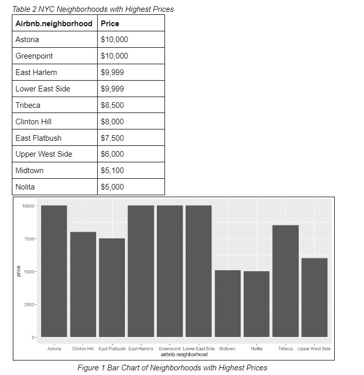
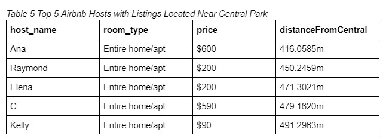
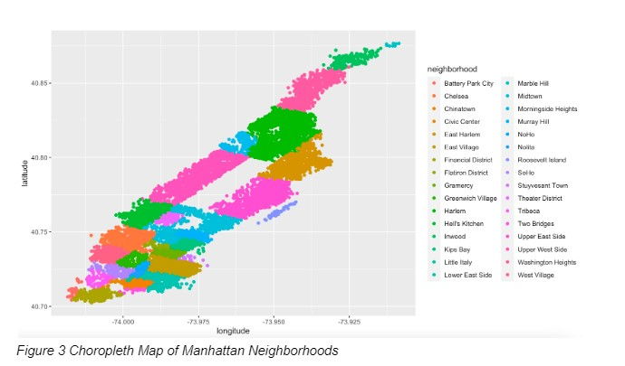

Created marketing materials such as posters and QR codes to promote Find 211 services
Created 8 question survey from users to recieve feedback about Find211 website
Analyzed user feedback and presented through graphical representations
"Find 211 is a three-digit phone number used for non-emergency health and human services informationn and referral to local resources (i.e., food assistance programs
housing assistance, employement support, legal help). This site is intended to help indviduals and families find services and resources within their community that inprove their overall health and well-being".
Group Members: Emily Sharkey, Alex McDonald, Jack Pawlowski, Jack Mossbarger, Rory Gordon, Karsen Noble, David Counsell, and Bryce Barnett
Data Wrangling Final Project
New York City Airbnb Locations and Local Attractions
Airbnb vacation rental company has presented itself as a valuable resource to travelers that are looking for better experiences, cheaper alternatives, and better locations compared to staying at an average hotel. According to The Zebra Research Center, 60% of Airbnb’s user base are millennials, with over 5.6 million active listings worldwide. Airbnbs vacation rentals attract customers from all over the world to visit new locations and attraction sites. Location of Airbnbs are a major influence on customers when finding the right Airbnb listing for them.
In this project, we utilized data on Airbnb locations in New York City from Kaggle.com and examined the most popular Airbnb locations in New York City and the price of each listing based on the distance to local attraction sites in New York City.

The summary table and bar chart indicates that Astoria and Greenpoint have the highest priced Airbnb listings in all of NYC neighborhoods. However, the Astoria Airbnb has a minimum night of 100, and the Greenpoint Airbnb has a minimum of 5 nights. Any price comparison of neighborhoods is likely to suffer from the effect of minimum nights. Thus, no conclusions about differences in Airbnb price by neighborhood can be drawn from this initial exploration of the data. Furthermore, because the neighborhood prices collected from Kaggle are impacted by minimum nights, analysis of the relationship between the Airbnb neighborhood and price is likely to be biased or inaccurate for Airbnbs with different minimum nights.


Shown in Figure 3 are the neighborhoods of Manhattan. The large, open rectangle in the middle of this map is Central Park. All of the closest Airbnbs are in the Upper East Side and Upper West Side neighborhoods. These neighborhoods are represented by the two pink shaded areas to the left and right of Central Park.